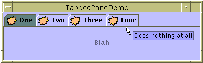

Feedback Form
|
|
Start of Tutorial > Start of Trail > Start of Lesson |
Search
Feedback Form |
With theJTabbedPaneclass, you can have several components (usually panels) share the same space. The user chooses which component to view by selecting the tab corresponding to the desired component. If you want similar functionality without the tab interface, you might want to use a card layout
instead of a tabbed pane.
To create a tabbed pane, you simply instantiate
JTabbedPane, create the components you wish it to display, and then add the components to the tabbed pane using theaddTabmethod.Here is a picture of an application that has a tabbed pane with four tabs:

Try this:
- Compile and run the application. The source file is
TabbedPaneDemo.java. You also need one image file:
middle.gif.
See Getting Started with Swing if you need help compiling or running this application.- Put the cursor over a tab.
After a short time, you'll see the tool tip associated with the tab. As a convenience, you can specify tool tip text when you add a component to the tabbed pane.- Select a tab.
The tabbed pane displays the component corresponding to the tab.
As the
TabbedPaneDemoexample shows, a tab can have a tool tip, and it can display both text and an image. The example shows the tabs in their default position, at the top of the tabbed pane. You can change the tab position to be at the left, right, or bottom of the tabbed pane.Below is the code from
TabbedPaneDemo.javaJTabbedPaneobject takes care of mouse events for you.ImageIcon icon = new ImageIcon("images/middle.gif"); JTabbedPane tabbedPane = new JTabbedPane(); Component panel1 = makeTextPanel("Blah"); tabbedPane.addTab("One", icon, panel1, "Does nothing"); tabbedPane.setSelectedIndex(0); Component panel2 = makeTextPanel("Blah blah"); tabbedPane.addTab("Two", icon, panel2, "Does twice as much nothing"); Component panel3 = makeTextPanel("Blah blah blah"); tabbedPane.addTab("Three", icon, panel3, "Still does nothing"); Component panel4 = makeTextPanel("Blah blah blah blah"); tabbedPane.addTab("Four", icon, panel4, "Does nothing at all");
The following tables list the commonly usedJTabbedPaneconstructors and methods. The API for using tabbed panes falls into these categories:
- Creating and Setting Up a Tabbed Pane
- Inserting, Removing, Finding, and Selecting Tabs
- Changing Tab Appearance
Creating and Setting Up a Tabbed Pane Method Purpose JTabbedPane()
JTabbedPane(int)Create a tabbed pane. The optional argument specifies where the tabs should appear. By default, the tabs appear at the top of the tabbed pane. You can specify these positions (defined in the SwingConstantsinterface, whichJTabbedPaneimplements):TOP,BOTTOM,LEFT,RIGHT.addTab(String, Icon, Component, String)
addTab(String, Icon, Component)
addTab(String, Component)Add a new tab to the tabbed pane. The first argument specifies the text on the tab. The optional icon argument specifies the tab's icon. The component argument specifies the component that the tabbed pane should show when the tab is selected. The fourth argument, if present, specifies the tool tip text for the tab.
Inserting, Removing, Finding, and Selecting Tabs Method Purpose insertTab(String, Icon, Component, String, int)Insert a tab at the specified index, where the first tab is at index 0. The arguments are the same as for addTab.remove(Component)
removeTabAt(int)Remove the tab corresponding to the specified component or index. removeAll()Remove all tabs. int indexOfComponent(Component)
int indexOfTab(String)
int indexOfTab(Icon)Return the index of the tab that has the specified component, title, or icon. void setSelectedIndex(int)
void setSelectedComponent(Component)Select the tab that has the specified component or index. Selecting a tab has the effect of displaying its associated component. int getSelectedIndex()
Component getSelectedComponent()Return the index or component for the selected tab.
Changing Tab Appearance Method Purpose void setComponentAt(int, Component)
Component getComponentAt(int)Set or get which component is associated with the tab at the specified index. The first tab is at index 0. void setTitleAt(int, String)
String getTitleAt(int)Set or get the title of the tab at the specified index. void setIconAt(int, Icon)
Icon getIconAt(int)
void setDisabledIconAt(int, Icon)
Icon getDisabledIconAt(int)Set or get the icon displayed by the tab at the specified index. void setBackgroundAt(int, Color)
Color getBackgroundAt(int)
void setForegroundAt(int, Color)
Color getForegroundAt(int)Set or get the background or foreground color used by the tab at the specified index. By default, a tab uses the tabbed pane's background and foreground colors. For example, if the tabbed pane's foreground is black, then each tab's title is black except for any tabs for which you specify another color using setForegroundAt.void setEnabledAt(int, boolean)
boolean isEnabledAt(int)Set or get the enabled state of the tab at the specified index.
This table lists examples that useJTabbedPaneand where those examples are described.
Example Where Described Notes TabbedPaneDemoThis page Demonstrates a few tabbed pane features, such as tool tips and icons in tabs. The frame's size is set using setSize.AlignmentDemoHow to Use BoxLayout Uses a JTabbedPaneas the only child of a frame's content pane. The tabs' components have different preferred sizes, and the frame usespackrather thansetSizeto set its size.BorderDemoHow to Use Borders Uses its tabbed pane in a manner similar to AlignmentDemo's usage. DialogDemoHow to Use Dialogs Has a tabbed pane in the center of a frame's content pane, with a label below it. Uses pack, notsetSize, to set the frame's size.
|
|
Start of Tutorial > Start of Trail > Start of Lesson |
Search
Feedback Form |
{kind=link}